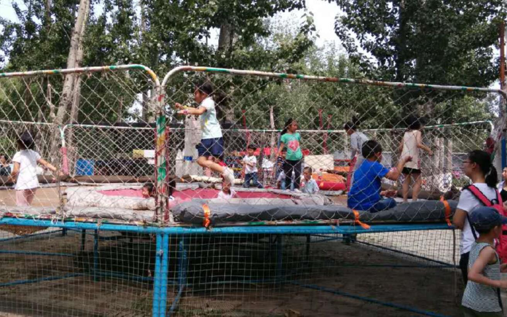
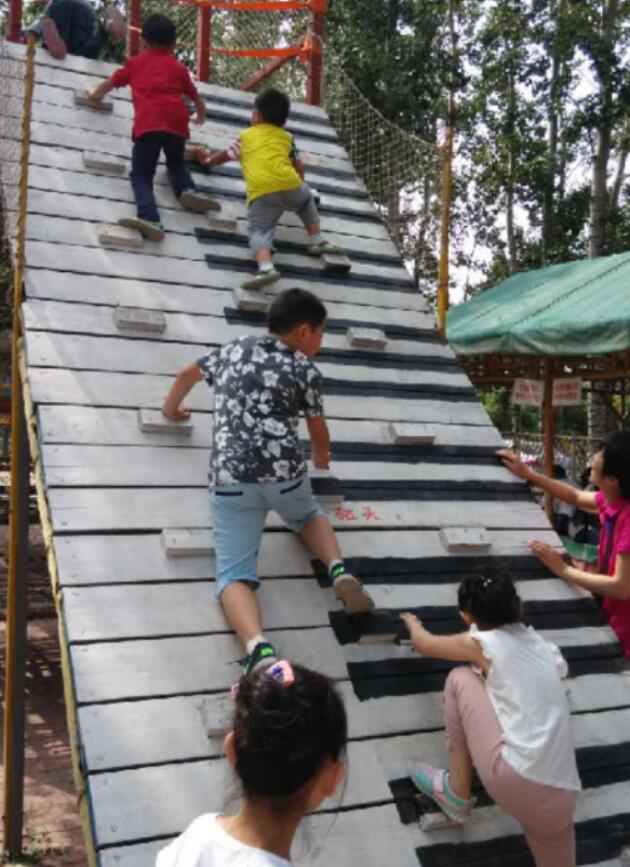
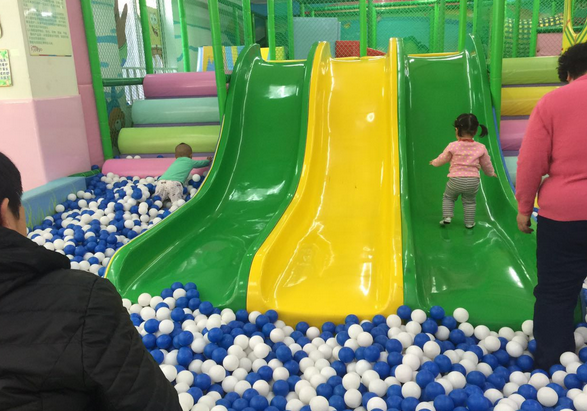
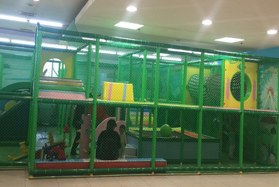

-
夏天来了，又到了蝉鸣蛙叫的季节了。言言的烈日下，万物已经恢复了生机，植被也开始茂盛的生长，而这样的季节里又该如何带孩子玩呢?
-
在这样的季节，陪孩子时容易遇到的问题！
1.天气太热，外出去长时间玩容易中暑
2.整天在家玩，不外出运动又对身体不好
3.总是看电视电脑，对孩子视力不好
- 森林里的避暑乐园---小精灵儿童乐园
- 
- 小精灵儿童乐园可以说最适合在夏日里带孩子外出去玩的乐园，因为整家乐园坐落于一片树林之中，就好像是森林中的精灵家园。这里有着茂密的树木，成片的树荫让孩子不会再玩乐的同时，受到烈日的伤害。
- 
- 而且这里不仅仅是一个乐园，也是一个儿童拓展的基地，孩子们可以在里面通过各种的设施来锻炼自我，在娱乐的同时获得了锻炼，真的是个不错的选择~
- 全新面貌全新上线---爱幼优儿童乐园
- 
- 最近刚刚开业的爱幼优儿童乐园也是个不错的选择，这里不但环境干净整洁，而且全新的游乐设备可以让孩子们放心地玩耍。
- 
- 同样的，这里是室内乐园，适宜的温度，让孩子们远离了夏日的热浪，能够在这炎炎夏日中找到一丝凉爽空间~
- 即便是在炎炎夏日，也不该让孩子始终在家里，也要经常的出去玩，因为欢快地玩耍，才是孩子真正的天性~